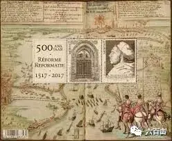
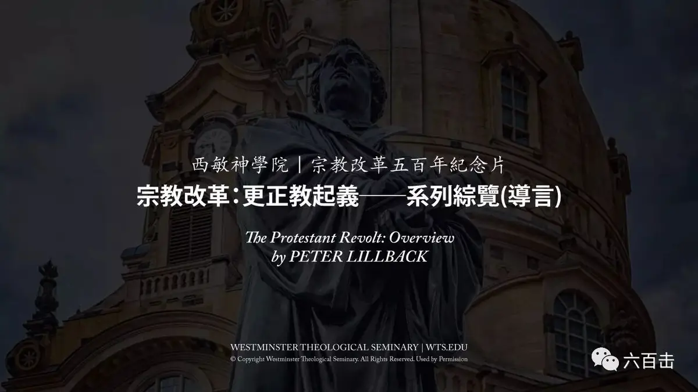
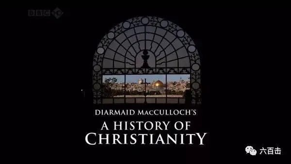
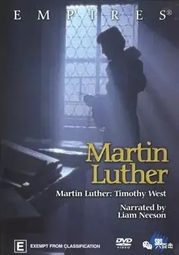

记得在高中学习中国近代史的时候，老师说当时的中国比较特殊，因为闭关锁国而被列强强行打开国门，后来我才注意到，在那个时候特殊的不是中国，因为当时的非洲、美洲以及欧洲的绝大多数国家都处于封闭之中，特殊的是当时崛起的海上马拉夫荷兰、日不落帝国英国和后起之秀美国，在当时，只有这些国家忽然之间大步迈向现代化，并最终推动了整个世界的现代化进程，而后通过马克思.韦伯的《新教伦理与资本主义精神》才知道，是宗教改革奠定了这些国家经济、政治、社会发展的信仰基础。

比利时6月12日发行欧洲宗教改革500年- 1517年路德改变了历史的进程邮票
这场伟大革命的起点则是开始于500年前的今天，1517年10月31日，马丁.路德在维登堡大教堂门前贴出了《关于赎罪券效能的辩论》（即《九十五条论纲》），提出讨论教会腐败问题，之后便在欧洲刮起了宗教改革的大风，而荷兰、德国、英国都是率先开始宗教改革的国家，美国更是由一批清教徒乘坐五月花号逃往北美开辟建立的。
日本教会制作的宗教改革５００年記念海报
我不禁对这场改革充满了好奇，不过很可惜，我们的历史书只是似是而非的轻描淡写，根本无法窥见这场伟大改革的真相。所以今天我将自己收藏的的电影、纪录片以及专题纪念片全部送给大家，希望能够帮助大家了解这场关系你我的信仰革命。
1

威斯敏斯特神学院宗教改革五百年纪念片
一共八集 / 每集20min左右
一起来看一下威斯敏斯特神学院院长Dr Peter A Lillback的介绍：“很荣幸欢迎各位，参与这次宗教改革运动的巡礼，我们将在节目中从宗教改革的起点──马丁路德开始谈起，谈谈人们生命的改变，许多教会快速增加，文化重新被巅覆与巩固，并永远留下了福音大能的印记，正是这福音的大能将我们推向美国的此岸，这事件发生于1517年10月31日，后来这日被定为宗教改革日，路德在这天将95条论纲，钉在维登堡教堂门上从此产生了一次机会，去辩论赎罪卷的问题，他当时压根不晓得，自己所做的充满爆炸力，竟然改变了欧洲的样貌，甚至对现代世界，与我们所处的后现代世界，有着巨大的影响，你可能会问：我到底为什么要在乎教会历史？各样的周年纪念一下子出现，又一下子被遗忘，而唯一要紧的事，就是活在当下，但要知道圣经本身教导我们，应当学习历史，请听希伯来书十三章7节，作者写道：「从前引导你们、传上帝之道给你们的人，你们要想念他们，效法他们的信心，留心看他们为人的结局，耶稣基督昨日、今日、一直到永远是一样的」希伯来书第十三章这些隽永的话，吩咐我们效法从前教导我们上帝之道的基督徒，所以在这趟旅程中我们将带各位造访几位上帝在教会历史中所兴起最杰出的圣经教师，他们所推动的宗教改革，将圣经的原则视为上帝真实的声音，由教师整理出这些原则，并借着要理问答和改教运动，来教导人对生命之道绝对忠诚，所以在这趟旅程中，将带各位前往马丁路德去过的地方，我们将要学习他的生平、他的挣扎、和他的盼望，好让我们明白，他是如何寻见施恩的上帝，并学习他重新发现的「唯独因信称义」，这正是使徒保罗在罗马书和加拉太书中所教导的。”
2

bbc 基督教历史
A History of Christianity
豆瓣评分8.9
牛津大学著名的历史学教授迪尔梅德.麦克库洛赫与BBC英国广播公司联手，精心打造这部优秀的纪录片。他将带我们去基督教古迹的现场鉴证历史，去访问知名的学者和宗教人士寻知问道，在浩瀚的历史长河里品味文明的足迹。透过这个系列的节目将增加对基督教和西方文明的了解，纪录片一共有六集，时间不充裕的弟兄姐妹，可以直接跳到第四集看宗教改革的部分，不过，建议大家都看完，可以进一步的了解教会历史。
3
马丁路德
Martin Luther
美国 /西德 1953年
导演：欧文.皮切尔/ Director：Iriving Pichel
剧情105分钟 / Drama 105 min
第19届威尼斯电影节金狮奖（提名）
第26届奥斯卡金像奖 黑白片最佳摄影、最佳艺术和布景（提名）
电影史中第一部关于马丁.路德的传记电影，电影历史还原度很高，布景和摄影非常考究，可以通过这部电影清楚了解基督教和天主教之间的区别，可以一同见证这场马丁.路德将生命压上的伟大革命。
4

马丁路德的改革
Empires: Martin Luther
英国 2002年
导演：Cassian Harrison
剧情115分钟 / Drama 115 min
豆瓣评分：8.4
如果你看不习惯上一部的黑白电影，你可以选择看这部电影，电影由威尼斯影帝连姆•尼森主演，他曾因主演史蒂芬•斯皮尔伯格的《辛德勒的名单》（Schindler's List，1993）获得了金球奖和奥斯卡奖提名。
而在今年马丁.斯科塞斯的《沉默》中，他也有精彩的表现
5
路德传
Luther
美国 /德国 2003年
导演：埃里克.蒂尔/ Director：Eric Till
剧情123分钟 / Drama 123 min
豆瓣评分7.6
这部电影的叙事和影像风格比较适合一般人的口味，可观赏性要高于前两部，电影由美国新生代演员约瑟夫.费因斯和德国老戏骨布鲁诺.甘茨共同出演，这部电影中的路德比较帅气一些，电影配乐也比较精彩，相信不会让大家失望。
6
玛戈王后
La Reine Margot
法国 /德国 /意大利 1994年
导演：帕特里斯.夏侯/ Director：Patrice Chereau
剧情159分钟 / Drama 159 min
戛纳电影节最佳女主角和评审团大奖
豆瓣评分7.8
影片改编自大仲马的名著，讲述十六世纪后半叶，法国处于“胡格诺战争”时期，天主教和新教残酷战争不断。而宫廷内部也奢华淫靡，腐败不堪。为了平息连年内战，信仰天主教的法国宫廷决定将玛格丽特公主（Isabelle Adjani 伊莎贝尔·阿佳妮 饰）嫁给新教徒的首领纳瓦尔国王亨利（Daniel Auteu il 丹尼尔·奥德耶 饰），1572年8月24日，婚礼在巴黎隆重举行。正当人们沉浸在欢乐的气氛中时。凯瑟琳皇后（Virna Lisi 饰）却下达命令，发动了一场针对新教徒的血腥大屠杀，即西方历史上著名的惨案——“圣巴托罗缪之夜”……
相关阅读：
不刷这篇影评，你看不懂《银翼杀手2049》
《乡愁》 | 没有一个人能够将信仰拍的如此诗意和凝重
一个唯科学主义者的悲剧
关注并回复： 宗教改革 获取资源大礼包
这里没有挑逗你眼目情欲的小鲜肉
也没有挑动你肉体情欲的段子
更没有膨胀你今生骄傲的鸡血
我们只在乎那些最质朴真诚的作品
在那里我们才能恢复真正的想象力
我们也坚信这才是我们真正需要的

ID:Six_hundred_hits
长按二维码，一键关注
【六百击】
-END-
电影评论
尽情分享朋友圈

苹果打赏通道